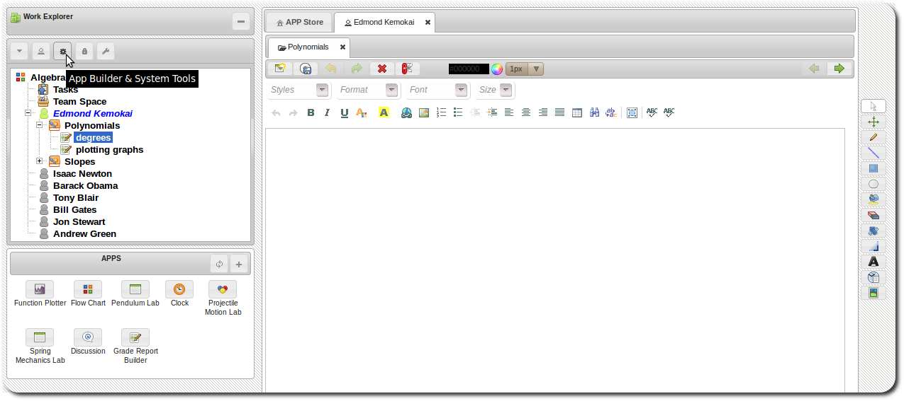
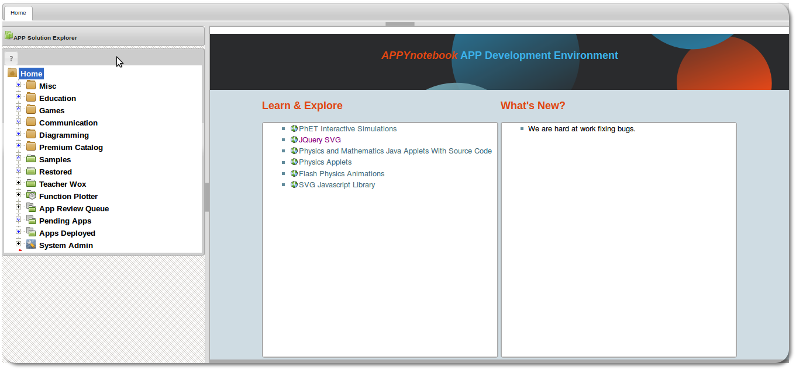

APP Development Environment
APP Development Environment.
The platform comes with a robust development environment for building, testing and deploying new
APPs.The developer environment can be accessed via the workspace by
clicking the App Builder & System Tools button.

Developer environment
